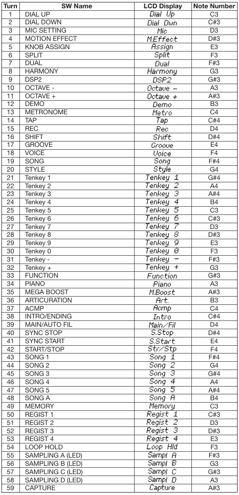

Согласно сервисной документации, вход в режим тестирования на синтезаторе Yamaha PSR E473 производится так же, как это делается на модеи E333.
То есть, для входа в режим надо:
В результате на экране возникнет надпись TEST.
Тест можно выбирать клавишами +/- (кнопку Shift зажимать не нужно). Тест запускается кнопкой Start (имеется в виду старт автоаккомпанимента). Останавливается той же кнопкой.
Доступны следующие тесты:
001 Version
002 Mem1 All
003 - не выбирается, перескакивает на 004, и так для многих номеров
004 Ram Chk1
006 WRomChk1
009 Pit Chk
011 Output R
012 Output L
018 SP Chk
019 MUTE Chk
021 HP Chk
022 AUX Chk
023 MIC CHk
025 SW Chk
026 A.LED On - проверка как светятся все светодиоды на панели
033 LCD On
034 LCD Off
036 MVol Chk
037 FS Chk
038 PD1 Chk
042 PB Chk
043 Knob Chk
046 Conn Chk
047 Strg Chk
053 Pos Chk
060 Rom Chk2
061 Ram Chk2
062 FRomChk2
063 WRomChk2
065 KB Chk - Тест музыкальной клавиатуры,
надо нажимать написанные кнопки,
в конце будет написано "KB OK"
066 Factory - Восстановление заводской прошивки,
запускать только при необходимости
067 TestExit - Выход из режима тестирования
Дополнение. Имеется информация о том, как надо проводить тесты.
001 ROM version
This shows the ROM version.
1)Press the [START/STOP] button.
2)The version number of the main program is displayed.
“*** Main” (where *** is the version number)
3)Press the [START/STOP] button to return to the test item selection screen.
002 Memory Check 1 All
Executes a simplified check of all the memories (Test №004-006) at one time.
1)Press the [START/STOP] button.
2)Check the test result.
If no problem is found, “Mem1 OK” is shown on the LCD.
If any problem is found, “Mem1 NG” is shown on the LCD.
3)Press the [START/STOP] button to return to the test item selection screen.
004 RAM Check1
Executes the simplified check of the RAM connected to the CPU bus.
1)Press the [START/STOP] button.
2)Check the test result.
If no problem is found, “Ram OK” is shown on the LCD.
If any problem is found, “Ram NG” is shown on the LCD.
3)Press the [START/STOP] button to return to the test item selection screen.
006 Wave ROM Check1
Executes a simplified check of the Wave ROM connected to the CPU bus.
1)Press the [START/STOP] button.
2)Check the test result.
If no problem is found, “WRom OK” is shown on the LCD.
If any problem is found, “WRom NG” is shown on the LCD.
3)Press the [START/STOP] button to return to the test item selection screen.
009 Pitch Check
Checks whether the correct pitch is output from this instrument.
1)Before starting the test, connect the Frequency Counter to the [PHONES] jack onthe rear panel. (Either L or R ch)2)Press the [START/STOP] button. The A3 sound is produced.
3)Check the Frequency counter indication.
Specifications range: 441.00 ± 0.2 Hz4)Press the [START/STOP] button to stop the A3 sound and return to the test itemselection screen.
011 Output level R Check
This measures whether the output level of the R channel of the Output jack is proper.
1)Before starting the test, connect the level meter to the Output jack on the rearpanel.
2)Set the MASTER VOLUME to the maximum position.
3)Press the [START/STOP] button. A 1kHz sine wave is produced from the Rchannel.
4)Check the output levels of L and R ch indicated on the Level meter.
No problem if the following conditions are satisfied.
[PHONES] (33 Ω load)•R: -21.5 dBu ± 2 dBu•L: -79.0 dBu or less[OUTPUT] (10 kΩ load)•R: -17.5 dBu ± 2 dBu•L/L+R: -77.0 dBu or less5)Press the [START/STOP] button to stop the 1 kHz sine wave sound and return tothe test item selection screen.
012 Output level L Check
This measures whether the output level of the L channel of the Output jack is proper.
1)Before starting the test, connect the level meter to the Output jack on the rearpanel.
2)Set the MASTER VOLUME to the maximum position.
3)Press the [START/STOP] button. A 1 kHz sine wave is produced from the Lchannel.
4)Check the output levels of L and R ch indicated on the Level meter.
No problem if the following conditions are satisfied.
[PHONES] (33 Ω load)•R: -79.0 dBu or less•L: -21.5 dBu ± 2 dBu[OUTPUT] (10 kΩ load)•R: -77.0 dBu or less•L/L+R: -17.5 dBu ± 2 dBu5)Press the [START/STOP] button to stop the 1 kHz sine wave sound and return tothe test item selection screen.
018 SP MUTE Check
Checks whether the Speaker Mute function works properly.
1)Press the [START/STOP] button. “SP OK” is shown on the LCD.
If any problem is found, “SP NG” is shown on the LCD.
2)Press the [START/STOP] button to return to the test item selection screen.
* For this test, do not connect anything to the [PHONES] jack.
019 MUTE Check
Checks whether the Mute function works properly.
1)Press the [START/STOP] button. “MUTE Off” is shown on the LCD and the C5sound is produced.
2)Press the [+] button, and the muting circuit is activated.
The LCD screen switches to “MUTE On”.
3)Confirm that the speakers and the output of the [PHONES] jack and the[OUTPUT] jack are muted.
4)Press the [-] button, and the muting circuit is deactivated.
The LCD screen switches to “MUTE Off”.
5)Confirm that the muting is deactivated for the speakers and the output of the[PHONES] jack and the [OUTPUT] jack.
6)Press the [START/STOP] button to stop the C5 sound and return to the test itemselection screen.
* When checking the output of the speakers, do not connect anything to the [PHONES]jack.
021 HP Insertion and Extraction Check
Checks whether headphones insertion and extraction work properly.
1)Press the [START/STOP] button.“HP In” is shown on the LCD.
2)Connect headphones to the [PHONES] jack. “HP Out” is shown on the LCD.
3)Remove the headphones from the [PHONES] jack. If there are no problems, “HPOK” is shown on the LCD.
4)Press the [START/STOP] button to return to the test item selection screen.
* If insertion/extraction of headphones is not detected within 60 seconds after the startof the test, it times out and “HP NG” is shown on the LCD.
022 AUX Check
Checks whether signal input to the [AUX IN] jack functions properly.
1)Press the [START/STOP] button, and check whether “AUX In” is shown on theLCD when nothing is connected to the [AUX-IN] jack.
2)Connect an oscillator to the [AUX IN] jack on the rear panel.
When the stereo mini-plug of the connection cable is plugged in to the [AUX IN]jack, confirm that the LCD display changes to “AUX Out”.
3)Connect the level meter to the [PHONES] jack on the rear panel. (Both L and Rchannels, 33 Ω load)4)Input a sine wave (-6.0 dBu, 1 kHz) to the R channel of the [AUX IN] jack.
5)Check the output levels of L and R ch indicated on the Level meter.
No problem if the following conditions are satisfied.
[PHONES] (33 Ω load)•R (input side): -7.5 dBu ± 2 dBu•L (nothing side): -72.0 dBu or less6)For the L channel, perform the same operations as in Steps 4 and 5.
7)Unplug the stereo mini cable from the [AUX IN] jack.
If no problem is found, “AUX End” is shown on the LCD.
023 MIC Check
Checks whether signal input to the [MIC INPUT] jack functions properly.
1)Press the [START/STOP] button, and check whether “MIC In” is shown on theLCD when nothing is connected to the [MIC-INPUT] jack.
2)Connect an oscillator to the [MIC INPUT] jack on the rear panel.
When the monaural plug of the connection cable is plugged in to the [MICINPUT] jack, confirm that the LCD display changes to “MIC Out”.
3)Connect the level meter to the [PHONES] jack on the rear panel. (Both L and Rchannels, 33 Ω load)4)Input a sine wave (-30.0 dBu, 1 kHz) to of the [MIC INPUT] jack.
5)Check the output levels of L and R ch indicated on the Level meter.
No problem if the following conditions are satisfied.
[PHONES] (33 Ω load)•GAIN: MAX L, R: 3.0 dBu ± 2 dBu•GAIN: MIN L, R: -75.0 dBu or less6)Unplug the monaural plug cable from the [MIC INPUT] jack.
If no problem is found, “MIC End” is shown on the LCD.
7)Press the [START/STOP] button to return to the test item selection screen.
025 SW/LED Check
Checks whether each panel button works properly.
1)Press the [START/STOP] button. “Dial Up” is shown on the LCD.
2)Turn the dial in the Up direction (to the right).
When the Up direction is detected, “Dial Dwn” is shown on the LCD.
3)Turn the dial in the Down direction (to the left).
When the Down direction is detected, “Mic” is shown on the LCD.
4)After that, press the buttons specified on the LCD one by one.
The sound of the note assigned to the pressed button will be produced. (Regardingwhat note is assigned, refer to “Switch test item list”)5)Press the [START/STOP] button to return to the test item selection screen.
* You can exit the test at any time by pressing the the lowest key ([C1] white key).
* If two or more buttons are pressed simultaneously, “Over Two” is shown on theLCD.
026 All LED On
Checks whether all of the LEDs turn on.
1)Press the [START/STOP] button.
2)Check that all of the LEDs are turned on.
3)Press the [START/STOP] button to turn off the LEDs and return to the test itemselection screen.
033 All LCD On
Checks whether all of the dots on the LCD screen turn on.
1)Press the [START/STOP] button.
2)Check that all the LCD dots are turned on.
3)Press the [START/STOP] button to return to the test item selection screen.
034 All LCD Off
Checks whether all the LCD dots are turned off properly.
1)Press the [START/STOP] button.
2)Check that all the LCD dots are turned off.
3)Press the [START/STOP] button to return to the test item selection screen.
036 Main Volume Check
Checks whether the minimum value and maximum value of the [MASTER VOLUME]control are detected properly.
1)Press the [START/STOP] button. “MVol Min” is shown on the LCD.
2)Set the [MAIN VOLUME] to the minimum. “MVol Max” is shown on the LCD.
3)Set the [MAIN VOLUME] to the maximum. If no problem is found “MVol OK”is shown on the LCD.
4)Press the [START/STOP] button to return to the test item selection screen.
037 Fail-Safe Check
Checks whether the Fail-Safe Circuit for digital volume control works properly.
1)Press the [START/STOP] button. “FS OK” is shown on the LCD.
If any problem is found, “FS NG” is shown on the LCD.
2)Press the [START/STOP] button to return to the test item selection screen.
038 Pedal1 Check
Checks whether the foot switch plugged into the [SUSTAIN] jack works properly.
1)Press the [START/STOP] button. The C3 sound is produced, and “PD1 On” isshown on the LCD.
2)Press the Foot switch to produce the C4 sound.
3)Release the Foot switch to stop the C4 sound.
If no problem is found, “PD1 OK” is shown on the LCD.
4)Press the [START/STOP] button to return to the test item selection screen.
* Connect a foot switch to the [SUSTAIN] jack before turning the power ON.
042 Pitch Bend Check
Checks whether the maximum value, minimum value, and center value of the [PITCHBEND] wheel are detected properly.
1)Press the [START/STOP] button. “PB UP” is shown on the LCD.
2)Turn the [PITCH BEND] wheel to the maximum position.
When the maximum value is detected, confirm that “PB DW” is shown on theLCD and that the G3 sound is produced.
3)Turn the [PITCH BEND] wheel to the minimum position.
When the minimum value is detected, confirm that “PB C” is shown on the LCD,and that the C3 sound is also produced.
4)Return the [PITCH BEND] wheel to the center position.
When the center value is detected, confirm that “PB OK” is shown on the LCD,and that the C4 sound is also produced.
5)Press the [START/STOP] button to stop the C4 sound and return to the testprogram selection screen.
* If the wheel is turned as directed, but the test does not advance to the next step, it isjudged as “NG”.
043 Knob Check
Checks whether the minimum value, maximum value, and center value of the [LIVECONTROL A, B] knobs are detected correctly.
1)Press the [START/STOP] button. “Knob1 Lo” is shown on the LCD.
2)Turn the [LIVE CONTROL A] knob to the minimum position.
When the minimum value is detected, the C3 sound is produced, and “Knob1 Hi”is shown on the LCD.
3)Turn the [LIVE CONTROL A] knob to the maximum position.
When the maximum value is detected, the C4 sound is produced, and “Knob1 C”is shown on the LCD.
4)Turn the [LIVE CONTROL A] knob to the center position.
When the center value is detected, the C4 sound stops, and “Knob2 Lo” is shownon the LCD.
5)Turn the [LIVE CONTROL B] knob to the minimum position.
When the minimum value is detected, the C3 sound is produced, and “Knob2 Hi”is shown on the LCD.
6)Turn the [LIVE CONTROL B] knob to the maximum position.
When the maximum value is detected, the C4 sound is produced, and “Knob2 C”is shown on the LCD.
7)Return the [LIVE CONTROL B] knob to the center position.
When the center value is detected, confirm that the C4 sound stops, and that“Knob OK” is shown on the LCD.
8)Press the [START/STOP] button to return to the test item selection screen.
046 USB Connection Check
Checks whether both the [USB TO DEVICE] and [USB TO HOST] jacks workproperly.
1)Press the [START/STOP] button. “Conn --” is shown on the LCD.
2)Connect the USB cable between the [USB TO DEVICE] jack and the [USB TOHOST] jack.
3)Confirm that “Conn OK” is shown on the LCD, and that the C4 sound isproduced.
4)Press the [START/STOP] button to stop the C4 sound and return to the testprogram selection screen.
5)Disconnect the USB cable.
* If a connection is not detected within 60 seconds after the start of the test, it times outand “Conn NG” is shown on the LCD.
047 USB Storage Check
Checks whether the USB Storage device works properly.
1)Insert a USB memory device in the [USB TO DEVICE] jack.
2)Press the [START/STOP] button. “Strg OK” is shown on the LCD.
3)Press the [START/STOP] button to return to the test item selection screen.
4)Remove the USB memory device.
* During the check, “Strg --” is shown on the LCD.
* If no media is inserted, “Strg no” will be shown on the LCD.
* If the media is protected, “Strg Prt” will be shown on the LCD.
* If reading/writing fails, “Strg NG” will be shown on the LCD.
053 Ping Pong Mode Check
Checks whether the 2 contacts of each key work properly.
1)Press the [START/STOP] button. “Press” is shown on the LCD.
2)Slowly press the key that you want to check.
3)When Contact No. 1 turns ON, “Make 1” is shown on the LCD, and the sound ofthe pressed key is produced.
4)When Contact No. 2 turns ON, “Make 1 2” is shown on the LCD, and the soundof the pressed key +4 is produced.
5)Release the key. When Contact No. 2 turns OFF, the sounds stops, and whenContact No. 1 turns OFF, “Press” is shown on the LCD.
6)Continue by repeating the operations of 2) to 5) for each of the keys to bechecked.
7)Press the [START/STOP] button to return to the test item selection screen.
* During this test item, it is not possible to return to the test item selection screen bypressing the lowest key.
060 ROM Check2
Executes the check of the ROM connected to the CPU bus (Full address).
1)Check the test result. (It will take about 10 seconds for the check.)If no problem is found, “Rom OK” is shown on the LCD.
If any problem is found, “Rom NG” is shown on the LCD.
2)Press the [START/STOP] button to return to the test item selection screen.
061 RAM Check2
Executes the check of the RAM connected to the CPU bus (Full address).
1)Check the test result.
If no problem is found, “Ram OK” is shown on the LCD.
If any problem is found, “Ram NG” is shown on the LCD.
2)Press the [START/STOP] button to return to the test item selection screen.
062 Flash ROM Check2
Executes the check of the flash ROM connected to the CPU bus (Full address).
1)Check the test result. (It will take about 3 minutes for the check.)If no problem is found, “FRom OK” is shown on the LCD.
If any problem is found, “FRom NG” is shown on the LCD.
2)Press the [START/STOP] button to return to the test item selection screen.
063 Wave ROM Check2
Executes a full-address check of the Wave ROM connected to the CPU bus.
1)Press the [START/STOP] button.
2)Check the test result. (It will take about 50 seconds for the check.)If no problem is found, “WRom OK” is shown on the LCD.
If any problem is found, “WRom NG” is shown on the LCD.
3)Press the [START/STOP] button to return to the test item selection screen.
065 Keyboard Check
Checks whether each key works properly.
1)Check that the LCD shows you the should-be-pressed key.
2)Press the key specified on the LCD one by one.
According to the key being inspected, the sounds between C3 and B4 areproduced repeatedly.
If no problem is found, “KB OK” is shown on the LCD.
* You can exit from this test by pressing the [DEMO] button.
* If the wrong key is pressed, nothing happens.
* If two or more keys are pressed simultaneously, “Over Two” is shown on the LCD.
* If the velocity of pressing the key is not suitable, “Too Slow” or “Too Fast” is shownon the LCD.
066 Factory Reset
Reset all the backup region of the memories to the initial factory status.
1)Press the [START/STOP] button.
2)Do not turn off the power while “Fact --” is shown on the LCD.
When initialization is complete, “Fact End” is shown on the LCD.
3)Press the [START/STOP] button to return to the test item selection screen.
067 Test Exit
Lets you exit from the Test mode to the normal mode.
1)Press the [START/STOP] button.
The Test Program mode will end, then the instrument will be restarted in normalmode.
* Never turn off the power until the Main display appears. Doing so may cause amalfunction.
Для теста №025 SW/LED Check пригодится таблица:

Эта таблица называется Switch Test Item List.